Partes de nieve · Guías
Partes de nieve diarios para esquiadores: dónde está la nieve, qué llega y dónde esquiar, a partir del mapa de nieve de SnowScope y de las estaciones de medida. Cada cifra sale de los datos del día.

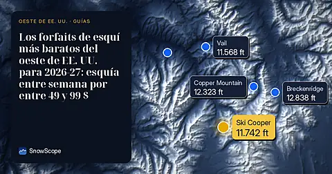
Siete estaciones de esquí independientes del Oeste donde un forfait de día de adulto cuesta entre 49 y 98,8 $ en días de diario, comparadas con la nieve que suelen tener en diciembre.

Forfaits de día en los Alpes desde 36 EUR: nueve estaciones comparadas por precio, kilómetros de pistas y la nieve que suelen tener, para encontrar el mejor día de esquí por tu dinero.

Forfaits de día en los Pirineos desde 46 EUR: seis estaciones de Francia, España y Andorra comparadas por precio, y después por la nieve que suelen tener en diciembre y enero.

Esquí en glaciar desde 68 EUR al día: hemos comparado siete glaciares de Francia, Austria, Alemania y Suiza por precio y por la nieve que suelen tener en diciembre.

Seis días de esquí desde 191 EUR: hemos clasificado diez semanas de esquí baratas en Europa por precio, y luego hemos revisado 46 inviernos pasados para ver dónde la nieve es fiable.


Beaver Mountain ofrece entradas de precio fijo a 75 dólares sin recargo en días de mayor afluencia. Principios de diciembre suele tener nieve escasa; apunta a mediados de mes o más tarde cuando la nieve es más fiable.

Bridger Bowl cobra $86 en línea para 2026/27. A media montaña hay 50 cm el 15 de diciembre en la mitad de los inviernos; la semana de Navidad mejora las probabilidades a 78 %.

Ski Cooper mantiene su precio de adulto entre semana en 49 $ para 2026-27 (99 $ los fines de semana). A media montaña suele haber 26 in (66 cm) de nieve el 15 de diciembre, el 70 % de los inviernos por encima de 20 in.
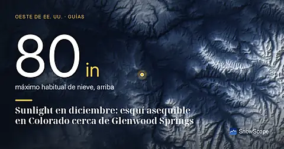
Sunlight cerca de Glenwood Springs afronta una apuesta de temporada temprana en diciembre. A mediados de mes puedes esperar 26 in (67 cm) a media montaña, aunque solo el 72% de los inviernos alcanzan esa profundidad.

Timberline a media montaña tiene 132 cm de nieve típica el 15 de diciembre. Las laderas superiores alcanzan 147 cm. Las entradas de día completo salen desde 129 $ en temporada baja.
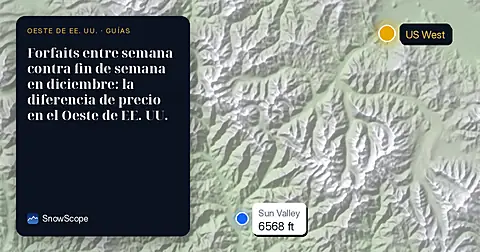
Siete estaciones de esquí del Oeste de EE.UU. ofrecen descuentos entre semana en diciembre. Ski Cooper ahorra $50 por día de lunes a viernes, Mt. Baker $16,62 en temporada baja. Las probabilidades de nieve a media montaña van del 70 % al 93 % antes del 15 de diciembre.

Para un viaje en diciembre, ¿vale la pena el Indy Pass de $419? Revisamos siete estaciones asociadas y sus probabilidades de nieve: el abono te sale rentable a partir de la tercera estación.

El forfait entre semana de Lookout Pass cuesta 63 $ reservado con antelación. A mediados de diciembre, la parte alta de la montaña suele tener 30-37 cm (75-95 cm). Datos del 13 de noviembre de 2026.
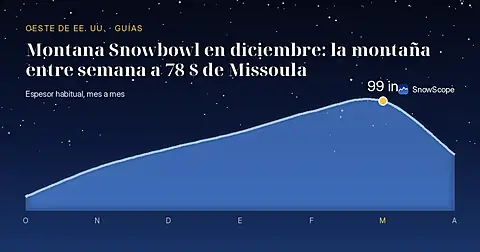
Los tickets de adulto 2026/27 de Montana Snowbowl son de 78 $ entre semana y 85 $ el fin de semana. A media montaña hubo 20 in (50 cm) para el 15 de diciembre en el 83 % de nuestros inviernos pasados.
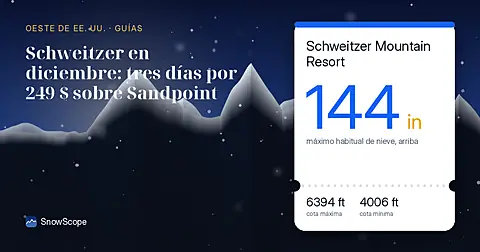
El 3-Pack de Schweitzer ofrece tres días por 249 dólares en una cresta que sube de 4010 ft a 6390 ft. La nieve a media montaña el 15 de diciembre tiene un promedio de 90 cm, con un 85 % de inviernos por encima de 50 cm.

Krvavec a media montaña tiene 13 cm de nieve típica el 15 de diciembre en 46 inviernos, pero terreno desnudo en 11 de ellos. Forfait diario EUR 47.

Esquía 157 km de pistas señalizadas en Serre Chevalier, donde la cima de la montaña tiene un 100 % de probabilidad de nieve a mediados de diciembre.
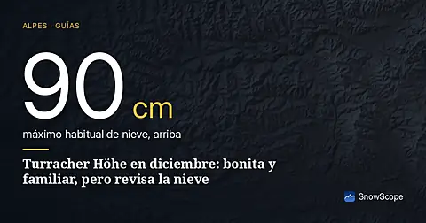
Turracher Höhe tiene 23 cm a media montaña el 15 de diciembre típico, pero solo el 39% de los inviernos alcanzan 30 cm allí a mediados de diciembre. Datos del 13 de noviembre de 2026.

Hochkar en media montaña tiene 38 cm en un 15 de diciembre típico, y el 63 % de los inviernos tuvieron 30 cm o más en esa semana. Forfaits diarios desde EUR 32,90 en fechas tranquilas.

Las probabilidades de nieve en Idre Fjäll en diciembre mejoran bruscamente después de mediados de mes. El 13 de noviembre, la profundidad típica a media montaña el 15 de diciembre es de 32 cm.
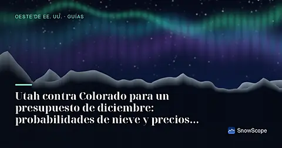
Brighton lidera en principios de diciembre con 37 in (94 cm) de nieve típica el 15. Wolf Creek se pone al día para Navidad. Precios y fiabilidad comparados.

Diez estaciones de esquí europeas clasificadas por su valor en diciembre, lideradas por Les 2 Alpes con 75 cm de nieve a media montaña.

Brundage Mountain ofrece nieve fiable a principios de temporada cerca de McCall, Idaho. La profundidad típica a media montaña alcanza 77 cm a mediados de diciembre, con forfaits desde 65 $ en días seleccionados.

Boí Taüll empieza a 2039 m y supera a Baqueira Beret en el precio del forfait, aunque la nieve de principios de diciembre requiere algo de paciencia.

Sälen en diciembre: 28 cm un 15 de diciembre típico y 48 % de inviernos con 30 cm a mitad de mes, menos que en los 80; Trysil, al lado, va mejor.
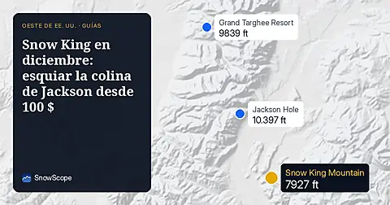
Snow King está al pie de Jackson. A mediados de diciembre, la media montaña suele tener 71 cm. Datos de 13 de noviembre de 2026.

Orcières Merlette ofrece una base elevada a 1826 m y un pase de 6 días desde 227 EUR, lo que la convierte en una opción fiable para un viaje de esquí en diciembre.

¿Vale la pena Alpe d'Huez para diciembre de 2026? Comprobamos las probabilidades de nieve, el precio inicial de 58,00 EUR y lo comparamos con Les 2 Alpes.

Los forfaits eslovenos son los más baratos (Krvavec 205 EUR por 6 días), pero allí la nieve natural de diciembre escasea; Lachtal, el Hochkar y el glaciar del Möll van mejor.
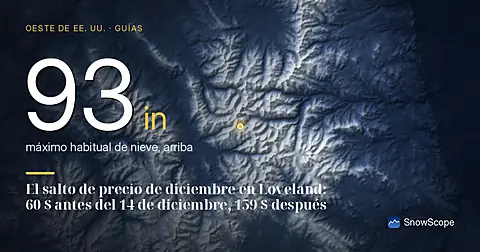
Loveland vende entradas online de 60 € hasta el 13 de diciembre, luego 159 € a partir del 14 de diciembre. El promedio de nieve de principios de diciembre es de 20 cm a media montaña, pero la base tiene la mitad de profundidad que a mediados de invierno.

Cauterets ofrece 25 km de pistas por 46 EUR, pero nuestro histórico de nieve muestra que la mejor oportunidad para encontrar cobertura es la última semana de diciembre.

Lachtal cuesta EUR 62 al día y los niños menores de 7 años esquían gratis. La media montaña tuvo 30 cm o más en el 72 % de los diciembres desde mediados de mes en adelante. Profundidad de nieve el 13 de noviembre de 2026.

White Pass recompensa las reservas anticipadas entre semana. A mediados de diciembre, la media montaña acumula 102 cm en un año típico. Datos del 13 de noviembre de 2026.

Esquía los 131 km de pistas en la Forêt Blanche este diciembre con un pase de seis días por 298 EUR.

El forfait de 6 días en Ruka cuesta EUR 265. Las probabilidades de nieve suben del 39% en principios de diciembre al 85% en la semana de Navidad. Planifica mediados de mes o más tarde.

En Monterosa Ski el forfait de día online va de 40,00 a 71,00 EUR. En diciembre la nieve está arriba: 124 cm habituales a 3030 m, 6 cm a 1207 m.
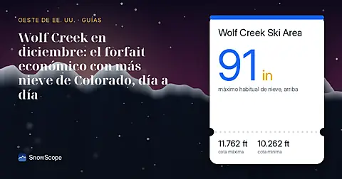
Wolf Creek tiene 87 cm a media montaña el 15 de diciembre típico. Los precios máximos comienzan el 20 de diciembre. Datos: 13 de noviembre de 2026.

El 15 de diciembre en Fellhorn/Kanzelwand: 63 cm en la cima a 1965 m, 30 cm a media montaña, solo 10 cm en la base a 918 m. Planifica en consecuencia.

Planifica tu viaje de diciembre de 2026 a Les Orres comparando los precios de los pases semanales con nuestro historial de nieve de 46 inviernos pasados.

La media montaña de Hemavan tiene 82 cm de nieve el 15 de diciembre típico. Todos los inviernos en 46 años tuvieron 30 cm o más a media altura en mediados de diciembre. Datos del 13 de noviembre de 2026.

Brighton a media montaña típicamente acumula 94 cm el 15 de diciembre. Datos al 13 de noviembre de 2026.

Compara Grandvalira y estaciones españolas en diciembre de 2026 en cuanto a espesores de nieve, cotas de remontes y precios desde 49,00 EUR.

Pitztaler Gletscher mantiene mejor la nieve de diciembre que la mayoría de estaciones de los Alpes: 87 cm a media montaña a mediados de diciembre, con cada invierno reciente por encima de 30 cm. Datos 13 de noviembre de 2026.
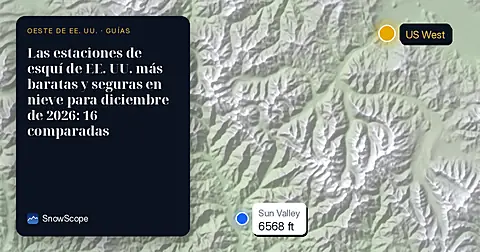
16 estaciones estadounidenses clasificadas por probabilidad de nieve el 15 de diciembre y precio del forfait de día completo para adultos. Grand Targhee lidera con un 100 % de probabilidad; cinco estaciones combinan más del 80 % de probabilidad con forfaits menores de 80 $. Datos del 13 de noviembre de 2026.

Para una semana de esquí familiar a buen precio en diciembre en Astún-Candanchú, apunta a finales de mes, cuando las pistas altas tienen buena nieve en el 67 % de los inviernos pasados.

Solo Zugspitze y la parte alta de Fellhorn aguantan 30 cm de forma fiable a mediados de diciembre. Las colinas bávaras más bajas ofrecen forfaits más baratos pero muchas menos probabilidades de nieve. Datos del 13 de noviembre de 2026.

Puy-Saint-Vincent combina un forfait de adulto de 1 día por 44 EUR con una buena cantidad de nieve en diciembre en las zonas altas, comparado aquí con su gran vecino Serre Chevalier.
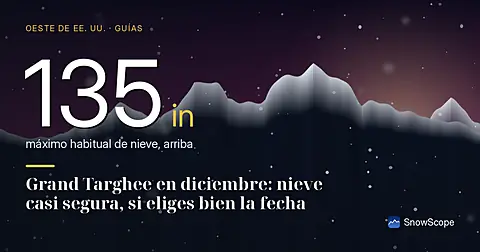
Grand Targhee ofrece nieve fiable en diciembre a todas las altitudes. A media montaña, 118 cm es típico a mediados de diciembre, y el 100% de los inviernos alcanzan 50 cm o más. Datos del 13 de noviembre de 2026.
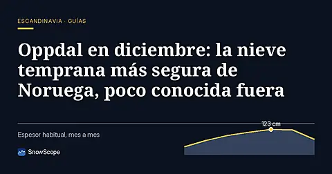
La base de Oppdal tiene 60 cm de nieve el 15 de diciembre típico, con un 93% de inviernos manteniendo 30 cm o más a mediados de diciembre. Datos de 46 inviernos.

Grimentz-Zinal ofrece 71 km de pistas y nieve fiable en altura para tu viaje de diciembre, con pases de 6 días a CHF 339,00.

Austria antes de Navidad: Galtür 258 EUR y Kühtai 269 EUR por 6 días, con 30 cm en más del 90 % de los inviernos; los glaciares cuestan más, las estaciones pequeñas son una apuesta.

¿Planeas un viaje en diciembre a Baqueira Beret? Mira nuestro historial de nieve, precios de forfaits desde 70,00 € para un pase de 1 día, y cómo se compara con Astún-Candanchú.

Clasificamos las estaciones de esquí francesas según las probabilidades de nieve en diciembre y los precios de los forfaits, empezando desde 36,00 EUR por un pase diario de adulto en Les Karellis.

Diciembre trae solo 18 cm de profundidad típica a media montaña en Oukaimeden, frente a 53 cm en marzo. La temporada temprana es escasa pero posible. Datos 13 de noviembre de 2026.

La media montaña de Galtür acumula 55 cm en un 15 de diciembre típico. Los forfaits de baja temporada cuestan EUR 55,50 hasta el 18 de diciembre. Datos de 46 inviernos, 1980-81 a 2025-26.

La media montaña de Geilo es esquiable en el 96 % de los diciembres. Profundidad típica el 15 de dic: 42 cm base, 57 cm media, 68 cm cima. Forfait diario desde NOK 590.

A menudo se vende Grandvalira como una opción económica para esquiar en diciembre, pero la nieve natural en la base promedia solo 9 cm en nuestros inviernos pasados.

El 15 de diciembre, Hemsedal muestra 32 cm en base, 70 cm a media montaña y 106 cm en cima. La altitud lo es todo aquí.
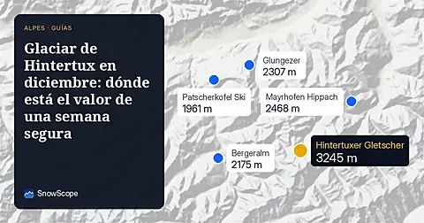
El 15 de diciembre a 3245 m, Hintertux tiene 98 cm de nieve en 46 inviernos de historia. Cada invierno tuvo 30 cm o más en la semana antes de Navidad allá arriba.

Compara las probabilidades de nieve en diciembre y los precios verificados de forfaits desde 40,00 EUR en las estaciones italianas para tu escapada de fin de semana en coche.

La base de Kühtai a 1939 m se mantiene nívea de forma fiable en diciembre. El 15 de diciembre típicamente hay 60 cm en la base, 72 cm a media montaña y 112 cm en la cumbre. El forfait de 6 días de temporada baja cuesta EUR 269 hasta el 18 de diciembre.

Les 2 Alpes llega a los 3511 m para asegurar nieve en diciembre de 2026, con un forfait de adulto de 6 días por 266,50 EUR.

Les Karellis ofrece 45 km de pistas y un forfait de 6 días para adultos por 191,00 EUR, con un 98 % de probabilidad de nieve a media montaña a finales de diciembre.

La nieve de diciembre en Levi se ha consolidado con el tiempo. Últimos 15 inviernos: el 100 % de las semanas navideñas tuvieron 30 cm o más. Profundidad típica el 15 de diciembre: 38 cm. Datos del 13 de noviembre de 2026.

Esquía en Livigno por 51,50 EUR al día antes del 18 de diciembre, cuando la nieve en la cima alcanza los 30 cm en el 100 % de los inviernos pasados.
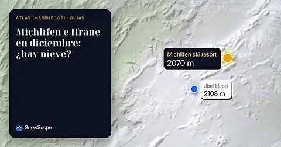
El 15 de diciembre en Michlifen, el 89% de los inviernos están casi pelados. La mejor oportunidad viene después de una tormenta, no por el calendario. Datos del 13 de noviembre de 2026.
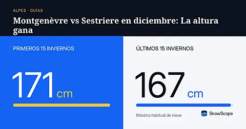
Montgenèvre tiene 56 cm de nieve habitual en diciembre en su base, dando a los esquiadores de fin de semana una cobertura más profunda que Sestriere al otro lado de la frontera.

Esquiar en Obertauern en diciembre: 43 cm un 15 de diciembre típico a media montaña y forfait de 6 días a 331 EUR antes de Navidad.
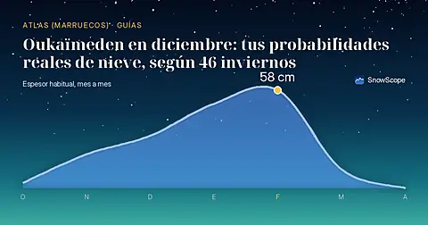
En la estación de esquí Oukaïmeden en Marruecos, un 15 de diciembre típico trae solo 16 cm a media montaña. SnowScope muestra probabilidades de 46 inviernos de datos.

Oukaïmeden está a 50 km de Marrakech. La nieve de diciembre es escasa e impredecible: planifica alrededor de tormentas, no del calendario. Datos del 13 de noviembre de 2026.

El 15 de diciembre, Oukaïmeden a media montaña tiene 16 cm frente a Val Thorens con 89 cm. Hemos comprobado los precios de los remontes. Datos del 13 de noviembre de 2026.
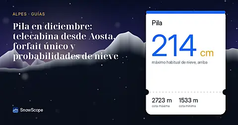
Pila, sobre Aosta, combina un forfait de día a un precio fijo de 60,00 EUR con una nieve de diciembre fiable en sus cotas altas.

Los remontes de Saas-Fee llegan a 3556 m, donde nuestro historial de nieve muestra que el 100 % de los inviernos pasados tienen al menos 30 cm de nieve a mediados de diciembre.

La nieve a media montaña alcanza 30 cm en el 83–100 % de los diciembres en Escandinavia. Precios fijos en Finlandia; precios dinámicos en Noruega y Suecia. Datos de 46 inviernos, 13 de noviembre de 2026.
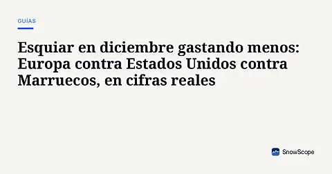
Probabilidades de nieve en diciembre de 46 inviernos y precios diarios verificados: Ski Cooper 49 $, Les 3 Vallées 75,70 €, Oukaïmeden sin tarifa oficial. Dónde funciona un día de esquí barato en diciembre.

Descubre las tranquilas pistas de St-Luc Chandolin, donde la nieve a media montaña ha alcanzado los 30 cm en el 98 % de los inviernos durante finales de diciembre.
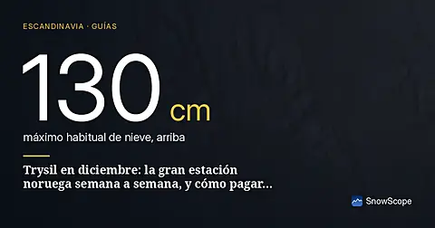
Trysil en diciembre: 44 cm a media montaña un 15 de diciembre típico, 83 % de inviernos con 30 cm a mitad de mes; los precios son dinámicos, reserva pronto.

Valloire-Valmeinier ofrece 131 km de pistas y un 98 % de probabilidad de tener 30 cm de nieve a media montaña a mediados de diciembre.

El glaciar de Zugspitze tiene 122 cm de nieve típica el 15 de diciembre a 2627 m; la cima de Garmisch-Classic tiene 57 cm. Mismo precio, diferente cobertura de nieve. Datos de 46 inviernos.

Mölltaler Gletscher en diciembre: 66 cm en el remonte más bajo (2103 m) y 128 cm a media montaña un 15 de diciembre típico; 6 días en temporada baja a 332 EUR.

Mt. Baker en diciembre: 46 in (116 cm) de nieve a media montaña en un 15 de diciembre típico, y un forfait de 98,80 $ de lunes a jueves, que solo se vende el mismo día en taquilla.
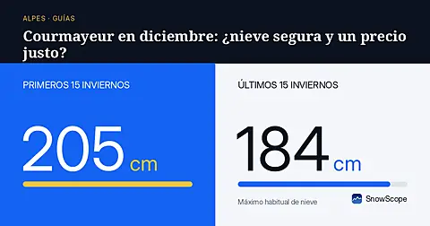
¿Puede un esquiador principiante y prudente confiar en Courmayeur en diciembre, cuando la media a media altura es de 60 cm de nieve según nuestro historial de inviernos pasados?

Reserva del 15-21 de diciembre en Åre para las mejores probabilidades de nieve antes de las multitudes navideñas. El 89 % de los inviernos tuvieron 30 cm a media montaña esa semana. Datos del 13 de noviembre de 2026.

La nieve empieza hacia los 10,200 pies (3,100 m). Qué es el NDSI y cómo se separa la nieve de las nubes.

El buscador de cumbres de SnowScope es una app gratis para identificar montañas: apunta el móvil a las montañas y te dice el nombre de cada cumbre, con su altura, distancia y tiempo de subida. En nuestras pruebas, el 98 % de las cumbres que muestra están realmente a la vista, y en fotos reales corrigió errores de brújula de hasta 105° a 0,15°. Gratis con 3 nombres, todas las cumbres por 0,99 € en un solo pago.

Previsión de nevadas en Park City (Utah) el 13 de noviembre de 2026: casi sin nieve en el suelo ahora mismo, unas 5 in cerca de la cima con el temporal del fin de semana y una cota de nieve de 7,400 a 7,700 ft, lluvia en la base y unas 12 in arriba en la semana.

Espesor de nieve en St. Anton am Arlberg el 13 de noviembre de 2026: cerca de 1 cm en la cima (2642 m), 5 cm a media montaña, nada en el pueblo. Esta semana 42 cm en la cima y 33 cm a media montaña, lluvia por debajo de unos 1480 m. Cuánta nieve necesitan las pendientes fuertes.

Nevadas en Val Thorens, 13 de noviembre de 2026: 27 cm caídos en la cima (3175 m) y 17 cm a 2498 m en siete días; el espesor de nieve es de 50 cm y 8 cm. Próximos siete días: 86 cm en la cima, 73 cm a 2498 m, cota de nieve muy por debajo del pueblo. La temporada habitual según 46 inviernos.

Parte de nieve de Les Menuires del 13 de noviembre de 2026: 28 cm en la cima (2838 m), nada en el suelo a 2112 m ni a 1386 m. Unos 80 cm esperados en la cima en siete días, cota de nieve hacia 1500 a 1700 m. Por qué Val Thorens, 450 m más arriba en el mismo valle, ya tiene más.

Estado de la nieve en Tignes el 13 de noviembre de 2026: 42 cm en la cima (3447 m), 12 cm a 2503 m, valle sin nieve a 1559 m y 99 cm previstos en la cima en siete días, con lluvia por debajo de unos 1700 m. La comparación con 46 inviernos pasados.

El parte de nieve de Les Arcs: 34 cm en la cima (3205 m), 2 cm a media montaña, base sin nieve, y hasta 69 cm de nieve nueva previstos en la cima en los próximos siete días. Lo que Les Arcs suele tener en noviembre y diciembre.

Sin nieve aún en Oukaïmeden el 12 de noviembre. Las cimas del Atlas están desnudas; la temporada de invierno alcanza típicamente su pico en marzo con 58 cm en la cima.


Hemos comparado la nieve del 10 de noviembre con la mayor altura de nieve de cada invierno en 46 estaciones de esquí durante 46 inviernos. Un comienzo nevado ayuda, pero menos de lo que creen muchos esquiadores.
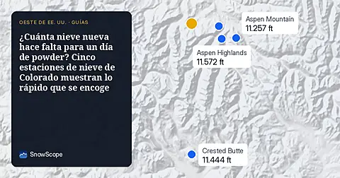
Una tormenta el 4 de noviembre dejó de 8 a 13 inches de nieve nueva en cinco estaciones altas de Colorado cerca de Aspen. Cinco días después, la mitad había desaparecido. Qué significa esto para los días de powder.

Tres inviernos flojos seguidos terminaron en 2025-26; este otoño ha empezado con normalidad.

Un mapa de pendientes de Les Grands Montets y otras siete estaciones muestra cuánto terreno supera los 30°, 35° y 40°, y por qué ese umbral importa para los aludes.

En 24 de 46 inviernos, las estaciones de la vertiente italiana y del sur de los Alpes franceses tuvieron un invierno relativamente mejor que la vertiente norte. El gráfico, los grandes años y el tiempo que hubo detrás.

En diciembre, la nieve depende sobre todo de la altura. 46 inviernos pasados en 676 estaciones de los Alpes muestran cuánta nieve esperar el 1, el 15 y el 22 de diciembre, desde menos de 1200 m hasta más de 2400 m.

Whistler Blackcomb recibió 75 cm de nieve nueva en la cima en una semana y después una tormenta templada con 124 mm de agua. Una guía sencilla sobre base, nieve nueva, lluvia y costra.

Un plan barato de 3 días en el lago de Como en diciembre con precios reales 2026-27: trenes, barcos, funicular y esquí en Piani di Bobbio o Madesimo, lo que ahorras frente a Cortina y la probabilidad de nieve en Navidad.
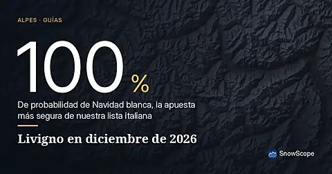
La nieve de hoy en Livigno, lo que dice la previsión estacional europea para diciembre y por qué en Navidad la altitud gana a un mes templado.
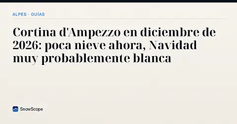
La nieve de hoy en Cortina, la previsión estacional europea para diciembre y nuestras probabilidades de una Navidad blanca en el este de los Dolomitas.
Pronóstico de Dolomitas para diciembre de 2026: más cálido por 1,7 °C, ligeramente más húmedo, 30 cm de nieve a fin de año, Navidad blanca a media montaña. Datos del 10 de noviembre.

Cuánta agua podría guardar la nieve del Atlas en febrero de 2027: la previsión estacional europea es unos 3 °C más cálida y más húmeda al oeste y al sur, así que las probabilidades de nieve siguen bajas en las cuencas de Marruecos.
Pronóstico de enero de 2027 para el Atlas de Marruecos: se esperan 69 millones de m³ de agua de nieve, muy por debajo de los habituales 206. Datos del 10 de noviembre de 2026.
Bou Iblane sigue desnuda en diciembre. Pronóstico estacional: 2,3 °C más cálido de lo habitual, solo se esperan 22 cm de nieve nueva, 0 cm en el suelo el 31 de diciembre. Datos: 10 de noviembre de 2026.
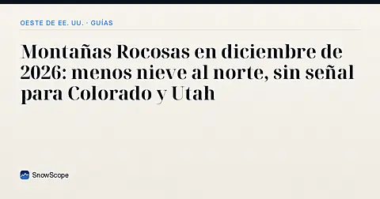
Perspectiva estacional para las Rocosas: diciembre más cálido, nieve cerca de lo normal, pero el norte tiende a ser más escaso mientras Colorado y Utah siguen sin decidirse. Datos del 10 de noviembre de 2026.

Diciembre en los Alpes del Sur será más cálido y húmedo de lo habitual, pero la profundidad de nieve a fin de año debería mantenerse cerca de lo normal. Análisis de SnowScope del 11 de noviembre de 2026.

Oukaimeden se enfrenta a un diciembre cálido con 13 cm previstos el 31 de diciembre, muy por debajo de los 26 cm habituales. Datos del 10 de noviembre de 2026.

Chamonix comienza diciembre con 27 cm en la cima pero nieve fina más abajo. El calor y la humedad se enfrentan; espera nieve de diciembre casi normal. Datos del 10 de noviembre de 2026.

Vail en cifras: un pico habitual de unas 64 in (162 cm) a media montaña en 46 inviernos pasados, marzo el mes más nevado, más terreno, acceso y seguridad.

Zermatt en cifras: dónde dura la nieve, los meses más seguros y cómo llegar al pueblo sin coches, a partir de 46 inviernos pasados.

Steamboat, Colorado, en familia: qué funciona para los más pequeños, los niños, los adolescentes y los padres, con la nieve de 46 inviernos pasados a tres alturas.

¿Es Verbier para principiantes? ¿Cuándo es mejor la nieve? ¿Cómo se llega? Respuestas sobre las 4 Vallées y 46 inviernos pasados.

Cómo pasar el primer día en Park City Mountain, Utah, y cuándo ir: nuestro histórico da unas 71 in (180 cm) de pico habitual a media montaña en 46 inviernos pasados.

La Sella Ronda desde Sëlva en Val Gardena: puertos de Gardena, Campolongo, Pordoi y Sella en orden, con nuestro histórico de nieve de 46 inviernos pasados.

Mt Baker, Washington: unas 133 in (337 cm) de pico habitual a media montaña en 46 inviernos pasados, un récord mundial de nieve y ningún alojamiento a pie de pista.